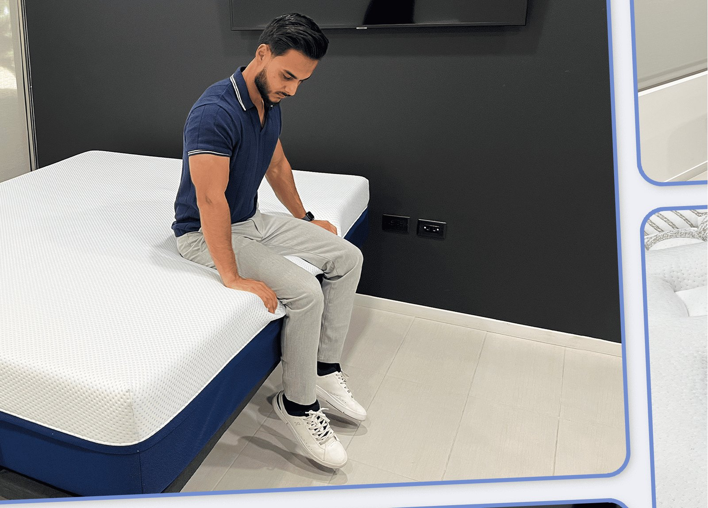

/mattress-lab/. Final launch still requires WordPress publish, schema render, media upload, redirects, and live QA.
Simply Rest Lab
By Firdous “Ferdie” Farhad | Lead tester: Firdous “Ferdie” Farhad | Updated June 19, 2026
Ferdie authors Simply Rest Lab mattress content from a first-hand, hands-on testing perspective, using pressure relief, spinal alignment, motion isolation, cooling, edge support, response, setup, and comfort observations to support each recommendation.
Simply Rest Lab is our mattress testing and evidence system. We evaluate mattresses through hands-on field tests, structured scoring, and visual proof so shoppers can compare comfort, support, cooling, motion isolation, edge support, response, and value before they buy.
Our goal is simple: make mattress reviews easier to trust. Instead of relying only on brand claims, we use repeatable tests, product scorecards, and real photos or clips from each mattress evaluation.

Disclosure and Review Limits
Affiliate disclosure: Simply Rest may earn a commission when readers buy through some links. Commercial relationships do not change the Simply Rest Lab scoring formula, and recommendations should be supported by visible testing notes, product facts, and methodology links.
Our mattress testing is not medical advice. We evaluate comfort, support, pressure relief, cooling, motion isolation, edge support, response, setup, and value, but we do not diagnose, treat, or guarantee relief for pain, sleep disorders, or medical conditions.
What Simply Rest Lab Measures
- Pressure relief: how well the mattress cushions areas like the shoulders, hips, and lower back.
- Spinal alignment: how well the mattress supports neutral posture in side, back, and stomach positions.
- Motion isolation: how much movement transfers across the mattress.
- Cooling and breathability: how warm or cool the surface feels during use.
- Edge support: how stable the perimeter feels when sitting or lying near the edge.
- Response time: how quickly the mattress rebounds after compression.
- Setup and usability: how easy the mattress is to unbox, move, and use.
- Value: how the mattress performs relative to price, policies, and category expectations.
How Our Lab Score Works
The Simply Rest Lab Score is a weighted rating designed to reflect real buying decisions. Support and sleep fit carry the most weight, followed by value, edge support, motion transfer, cooling, response time, and trial policy.
| Category | Weight | Why it matters |
|---|---|---|
| Support / Sleep Fit | 25% | Determines whether the mattress fits the sleeper’s body type and sleep position. |
| Value | 15% | Compares price, quality, policies, and performance. |
| Edge Support | 15% | Shows usable surface area and perimeter stability. |
| Motion Transfer | 15% | Important for couples and restless sleepers. |
| Cooling & Breathability | 10% | Helps hot sleepers compare temperature comfort. |
| Response Time | 10% | Shows how easy the mattress is to move on. |
| Trial Period | 10% | Reflects buyer risk and return flexibility. |
Current Simply Rest Lab Score Database
This is the current mattress score source of truth for phase-one reviews and recommendation pages. The Overall column is the public Lab Score; the remaining columns are category-level evidence scores used to explain the recommendation.
| Model | Overall | Value | Edge Support | Trial Period | Response Time | Motion Transfer | Cooling & Breathability |
|---|---|---|---|---|---|---|---|
| Amerisleep AS3 | 10 | 9 | 10 | 9 | 9 | 10 | 10 |
| Amerisleep AS3 Hybrid | 10 | 9 | 10 | 9 | 9 | 9 | 10 |
| Amerisleep AS2 | 9 | 9 | 8 | 9 | 10 | 10 | 10 |
| Amerisleep AS5 | 9 | 8 | 10 | 9 | 8 | 9 | 10 |
| Amerisleep AS5 Hybrid | 9 | 8 | 9 | 9 | 8 | 9 | 10 |
| Amerisleep Organica | 9 | 9 | 9 | 9 | 10 | 9 | 9 |
| Amerisleep Organica (Plush) | 9 | 8 | 8 | 9 | 10 | 9 | 9 |
| Zoma Boost | 10 | 10 | 10 | 9 | 9 | 10 | 9 |
| Zoma Start | 9 | 10 | 10 | 9 | 8 | 9 | 9 |
| Zoma Hybrid | 9 | 10 | 10 | 9 | 9 | 9 | 9 |
| Nolah Natural 11" | 8 | 9 | 9 | 9 | 10 | 8 | 9 |
| Nolah Evolution 15" | 10 | 10 | 10 | 9 | 9 | 10 | 9 |
| Vaya Hybrid | 8 | 10 | 8 | 9 | 10 | 8 | 8 |
| Vaya Foam | 8 | 10 | 7 | 9 | 9 | 9 | 8 |
| Nest Bedding Sparrow | 10 | 8 | 10 | 10 | 9 | 10 | 9 |
| Brooklyn Bedding Aurora Luxe | 9 | 9 | 8 | 9 | 8 | 9 | 10 |
| Birch Natural | 8 | 9 | 9 | 9 | 10 | 8 | 9 |
| Bear Star Hybrid | 9 | 9 | 9 | 9 | 8 | 9 | 9 |
| GhostBed Luxe | 7 | 8 | 8 | 9 | 6 | 10 | 9 |
| Purple RestorePlus Hybrid | 9 | 7 | 9 | 9 | 10 | 9 | 9 |
| Saatva Classic | 10 | 7 | 10 | 10 | 10 | 9 | 9 |
| Helix Midnight Luxe | 9 | 7 | 10 | 9 | 9 | 9 | 10 |
| Amerisleep AS6 Black Series | 10 | 9 | 9 | 9 | 9 | 10 | 10 |
Meet the Lead Tester
Firdous “Ferdie” Farhad serves as Simply Rest Lab’s lead hands-on tester. Ferdie demonstrates mattress feel, pressure relief, spinal alignment, motion isolation, edge support, response, and setup in first-hand testing clips.
Editorial note: This page uses Ferdie’s safe approved role: author and lead hands-on tester. It avoids unsupported clinical or credential claims.
Where to Start
Ferdie’s First-Hand Testing Notes
Ferdie’s first-hand testing summary connects this page to the Simply Rest Lab methodology, showing which pressure, alignment, motion, cooling, edge, response, setup, and comfort observations shaped the recommendation.
- Pressure relief: shoulder, hip, and lower-back response.
- Spinal alignment: side, back, and stomach position support.
- Motion isolation: movement transfer and partner-disturbance risk.
- Cooling: cover feel, airflow, and thermal comfort notes.
- Edge support: sitting and lying edge compression.
- Response time: bounce-back and ease of movement.
- Evidence: matching Simply Rest Lab photo or clip.
Methodology link: How Simply Rest Lab tests mattresses.
Simply Rest Lab FAQ
What is Simply Rest Lab?
Simply Rest Lab is the testing and evidence system behind Simply Rest mattress reviews, rankings, and comparisons.
Who tests mattresses for Simply Rest Lab?
Firdous “Ferdie” Farhad is the visible author and lead hands-on tester for Simply Rest Lab mattress content.
How are Simply Rest Lab scores calculated?
Scores use a weighted formula built around support and sleep fit, value, edge support, motion transfer, cooling and breathability, response time, and trial policy.